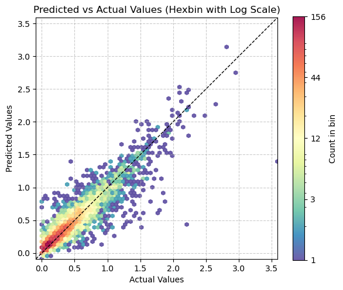

# setting up pod and pip install uhina
# accessing a pod terminal
# 1. To get access to the pod ip adress: runpodctl get pod -a
# 2. ssh into the pod: ssh root@<ip-address> -p 58871 -i ~/.ssh/id_ed25519
# git clone https://github.com/franckalbinet/uhina.git
# pip install uhina
# runpodctl send im-bw
# runpodctl send ossl-tfm.csvRingtrial
Evaluation Resnet 18 pre-trained on OSSL dataset on ringtrial data.
To do:
- for each lab, fine-tune and eval on test set
- use TTA and at what n it starts leveling off?
- increase progressively train, valid, test set sizes
- normalize on ringtrial statisticsRunpod setup
Loading data
import pandas as pd
from pathlib import Path
import fastcore.all as fc
from fastai.data.all import *
from fastai.vision.all import *
from multiprocessing import cpu_count
from sklearn.metrics import r2_score
from uhina.augment import Quantize
import warnings
warnings.filterwarnings('ignore')
pd.set_option('display.max_rows', 100)src = '../../_data/ringtrial-tfm/im-targets-lut.csv'
df = pd.read_csv(src)
df['lab'] = df['fname'].str.split('-rt', n=1).str[0]
df.head()| fname | potassium_cmolkg | lab | |
|---|---|---|---|
| 0 | agrocares-rt-01.png | 0.26906 | agrocares |
| 1 | agrocares-rt-02.png | 0.23349 | agrocares |
| 2 | agrocares-rt-03.png | 0.29109 | agrocares |
| 3 | agrocares-rt-04.png | 0.49925 | agrocares |
| 4 | agrocares-rt-05.png | 0.59977 | agrocares |
df['potassium_cmolkg'] = df['potassium_cmolkg'].apply(np.log1p)Fine-tuning on ringtrial
class OrderedQuantize(Quantize):
order = 0 # Apply first
class OrderedRatioResize(RatioResize):
order = 1 # Apply second# learn = load_learner('./models/650-4000-epoch-25-lr-3e-3.pkl', cpu=True)
# learn = load_learner('./models/unfrozen-epoch-30-lr-1.5e-3-12102024.pkl', cpu=True)
# learn = load_learner('./models/unfrozen-epoch-30-lr-1.5e-3-12102024.pkl', cpu=True)
learn = load_learner('./models/frozen-epoch-30-lr-1.5e-3-12102024.pkl', cpu=True)df.lab.unique()array(['agrocares', 'argonne', 'csu-il', 'eth-alpha-1', 'eth-alpha-2',
'eth-vertex', 'iaea-aug2022', 'kssl', 'landcare', 'lesotho', 'msu',
'osu', 'rothamsted', 'scion', 'ughent', 'uiuc', 'usp',
'uwisc-fine', 'woodwell-alpha', 'woodwell-vertex'], dtype=object)# np.expm1(np.log1p(2))
df_selected = df[df.lab == 'kssl']
df_selected.head()| fname | potassium_cmolkg | lab | |
|---|---|---|---|
| 483 | kssl-rt-01.png | 0.238276 | kssl |
| 484 | kssl-rt-02.png | 0.209848 | kssl |
| 485 | kssl-rt-03.png | 0.255487 | kssl |
| 486 | kssl-rt-04.png | 0.404965 | kssl |
| 487 | kssl-rt-05.png | 0.469860 | kssl |
# def splitter(items): return [idx_train, idx_valid]
eval_on_pretrained = False
if eval_on_pretrained:
dblock = DataBlock(
blocks=(ImageBlock, RegressionBlock),
get_x=ColReader(0, pref='../../_data/ringtrial-tfm/im/'),
get_y=ColReader(1),
# splitter=splitter,
splitter=RandomSplitter(valid_pct=0, seed=41),
item_tfms=[OrderedQuantize(n_valid=len(df_selected))],
batch_tfms=[
OrderedRatioResize(224),
Normalize.from_stats(*imagenet_stats)
]
)
dls = dblock.dataloaders(df_selected, bs=len(df_selected))
val_preds, val_targets = learn.get_preds(dl=dls.train)
r2 = r2_score(val_targets, val_preds)
print(r2)# Eval on pre-trained model
# eval_on_pretrained = True
# if eval_on_pretrained:
# dblock = DataBlock(
# blocks=(ImageBlock, RegressionBlock),
# get_x=ColReader(0, pref='../../_data/ringtrial-tfm/im/'),
# get_y=ColReader(1),
# splitter=RandomSplitter(valid_pct=0, seed=41),
# batch_tfms=[RatioResize(224)],
# item_tfms=[Quantize(n_valid=len(df_selected))])
# dls = dblock.dataloaders(df_selected, bs=len(df_selected))
# val_preds, val_targets = learn.get_preds(dl=dls.train)
# r2 = r2_score(val_targets, val_preds)
# print(r2)df_selected.loc[:, 'potassium_cmolkg'] = df_selected['potassium_cmolkg'].apply(np.log1p)
df_selected.head()| fname | potassium_cmolkg | lab | |
|---|---|---|---|
| 483 | kssl-rt-01.png | 0.213720 | kssl |
| 484 | kssl-rt-02.png | 0.190494 | kssl |
| 485 | kssl-rt-03.png | 0.227523 | kssl |
| 486 | kssl-rt-04.png | 0.340012 | kssl |
| 487 | kssl-rt-05.png | 0.385167 | kssl |
df_selected| fname | potassium_cmolkg | lab | |
|---|---|---|---|
| 483 | kssl-rt-01.png | 0.213720 | kssl |
| 484 | kssl-rt-02.png | 0.190494 | kssl |
| 485 | kssl-rt-03.png | 0.227523 | kssl |
| 486 | kssl-rt-04.png | 0.340012 | kssl |
| 487 | kssl-rt-05.png | 0.385167 | kssl |
| 488 | kssl-rt-06.png | 0.402441 | kssl |
| 489 | kssl-rt-07.png | 0.331974 | kssl |
| 490 | kssl-rt-08.png | 0.101317 | kssl |
| 491 | kssl-rt-09.png | 0.681530 | kssl |
| 492 | kssl-rt-10.png | 0.274231 | kssl |
| 493 | kssl-rt-11.png | 0.289119 | kssl |
| 494 | kssl-rt-12.png | 0.256386 | kssl |
| 495 | kssl-rt-13.png | 0.369230 | kssl |
| 496 | kssl-rt-14.png | 0.191284 | kssl |
| 497 | kssl-rt-15.png | 0.393472 | kssl |
| 498 | kssl-rt-16.png | 0.508054 | kssl |
| 499 | kssl-rt-17.png | 0.467364 | kssl |
| 500 | kssl-rt-18.png | 0.308044 | kssl |
| 501 | kssl-rt-19.png | 0.292841 | kssl |
| 502 | kssl-rt-20.png | 0.294769 | kssl |
| 503 | kssl-rt-21.png | 0.335060 | kssl |
| 504 | kssl-rt-22.png | 0.079189 | kssl |
| 505 | kssl-rt-23.png | 0.272119 | kssl |
| 506 | kssl-rt-24.png | 0.160069 | kssl |
| 507 | kssl-rt-25.png | 0.158562 | kssl |
| 508 | kssl-rt-26.png | 0.144258 | kssl |
| 509 | kssl-rt-27.png | 0.137756 | kssl |
| 510 | kssl-rt-28.png | 0.516908 | kssl |
| 511 | kssl-rt-29.png | 0.267374 | kssl |
| 512 | kssl-rt-30.png | 0.301326 | kssl |
| 513 | kssl-rt-31.png | 0.306298 | kssl |
| 514 | kssl-rt-32.png | 0.291591 | kssl |
| 515 | kssl-rt-33.png | 0.373274 | kssl |
| 516 | kssl-rt-34.png | 0.100724 | kssl |
| 517 | kssl-rt-35.png | 0.082217 | kssl |
| 518 | kssl-rt-36.png | 0.142215 | kssl |
| 519 | kssl-rt-37.png | 0.126304 | kssl |
| 520 | kssl-rt-38.png | 0.045243 | kssl |
| 521 | kssl-rt-39.png | 0.334103 | kssl |
| 522 | kssl-rt-40.png | 0.515146 | kssl |
| 523 | kssl-rt-41.png | 0.531581 | kssl |
| 524 | kssl-rt-42.png | 0.351257 | kssl |
| 525 | kssl-rt-43.png | 0.233260 | kssl |
| 526 | kssl-rt-45.png | 0.271288 | kssl |
| 527 | kssl-rt-46.png | 0.307444 | kssl |
| 528 | kssl-rt-47.png | 0.256559 | kssl |
| 529 | kssl-rt-48.png | 0.544772 | kssl |
| 530 | kssl-rt-49.png | 0.366122 | kssl |
| 531 | kssl-rt-50.png | 0.542601 | kssl |
| 532 | kssl-rt-51.png | 0.547084 | kssl |
| 533 | kssl-rt-52.png | 0.283886 | kssl |
| 534 | kssl-rt-53.png | 0.337035 | kssl |
| 535 | kssl-rt-54.png | 0.284184 | kssl |
| 536 | kssl-rt-55.png | 0.306663 | kssl |
| 537 | kssl-rt-56.png | 0.541332 | kssl |
| 538 | kssl-rt-57.png | 0.548911 | kssl |
| 539 | kssl-rt-58.png | 0.551454 | kssl |
| 540 | kssl-rt-59.png | 0.380625 | kssl |
| 541 | kssl-rt-60.png | 0.462484 | kssl |
| 542 | kssl-rt-61.png | 0.379143 | kssl |
| 543 | kssl-rt-62.png | 0.223065 | kssl |
| 544 | kssl-rt-63.png | 0.223065 | kssl |
| 545 | kssl-rt-64.png | 0.131506 | kssl |
| 546 | kssl-rt-65.png | 0.226245 | kssl |
| 547 | kssl-rt-66.png | 0.852376 | kssl |
| 548 | kssl-rt-67.png | 0.619430 | kssl |
| 549 | kssl-rt-68.png | 0.486798 | kssl |
| 550 | kssl-rt-69.png | 0.519743 | kssl |
| 551 | kssl-rt-70.png | 0.551429 | kssl |
df_selected['potassium_cmolkg'].hist()Train/valid/test split
Using Kennard-Stone
df.lab.unique()array(['agrocares', 'argonne', 'csu-il', 'eth-alpha-1', 'eth-alpha-2',
'eth-vertex', 'iaea-aug2022', 'kssl', 'landcare', 'lesotho', 'msu',
'osu', 'rothamsted', 'scion', 'ughent', 'uiuc', 'usp',
'uwisc-fine', 'woodwell-alpha', 'woodwell-vertex'], dtype=object)df_selected = df[df.lab == 'kssl']len(df_selected)69from uhina.loading import LoaderFactory
src = Path.home() / 'pro/data/woodwell-ringtrial/drive-download-20231013T123706Z-001'
loader = LoaderFactory.get_loader(src, 'ringtrial')
data = loader.load_data(analytes='potassium_cmolkg')
print(f'X shape: {data.X.shape}')X shape: (1400, 1676)# 44 is missing
indices_df = [name.split('.png')[0] for name in df_selected.fname]; indices_df['kssl-rt-01',
'kssl-rt-02',
'kssl-rt-03',
'kssl-rt-04',
'kssl-rt-05',
'kssl-rt-06',
'kssl-rt-07',
'kssl-rt-08',
'kssl-rt-09',
'kssl-rt-10',
'kssl-rt-11',
'kssl-rt-12',
'kssl-rt-13',
'kssl-rt-14',
'kssl-rt-15',
'kssl-rt-16',
'kssl-rt-17',
'kssl-rt-18',
'kssl-rt-19',
'kssl-rt-20',
'kssl-rt-21',
'kssl-rt-22',
'kssl-rt-23',
'kssl-rt-24',
'kssl-rt-25',
'kssl-rt-26',
'kssl-rt-27',
'kssl-rt-28',
'kssl-rt-29',
'kssl-rt-30',
'kssl-rt-31',
'kssl-rt-32',
'kssl-rt-33',
'kssl-rt-34',
'kssl-rt-35',
'kssl-rt-36',
'kssl-rt-37',
'kssl-rt-38',
'kssl-rt-39',
'kssl-rt-40',
'kssl-rt-41',
'kssl-rt-42',
'kssl-rt-43',
'kssl-rt-45',
'kssl-rt-46',
'kssl-rt-47',
'kssl-rt-48',
'kssl-rt-49',
'kssl-rt-50',
'kssl-rt-51',
'kssl-rt-52',
'kssl-rt-53',
'kssl-rt-54',
'kssl-rt-55',
'kssl-rt-56',
'kssl-rt-57',
'kssl-rt-58',
'kssl-rt-59',
'kssl-rt-60',
'kssl-rt-61',
'kssl-rt-62',
'kssl-rt-63',
'kssl-rt-64',
'kssl-rt-65',
'kssl-rt-66',
'kssl-rt-67',
'kssl-rt-68',
'kssl-rt-69',
'kssl-rt-70']mask = np.isin(data.sample_indices, np.array(indices_df))data.sample_indices[mask]array(['kssl-rt-01', 'kssl-rt-02', 'kssl-rt-03', 'kssl-rt-04',
'kssl-rt-05', 'kssl-rt-06', 'kssl-rt-07', 'kssl-rt-08',
'kssl-rt-09', 'kssl-rt-10', 'kssl-rt-11', 'kssl-rt-12',
'kssl-rt-13', 'kssl-rt-14', 'kssl-rt-15', 'kssl-rt-16',
'kssl-rt-17', 'kssl-rt-18', 'kssl-rt-19', 'kssl-rt-20',
'kssl-rt-21', 'kssl-rt-22', 'kssl-rt-23', 'kssl-rt-24',
'kssl-rt-25', 'kssl-rt-26', 'kssl-rt-27', 'kssl-rt-28',
'kssl-rt-29', 'kssl-rt-30', 'kssl-rt-31', 'kssl-rt-32',
'kssl-rt-33', 'kssl-rt-34', 'kssl-rt-35', 'kssl-rt-36',
'kssl-rt-37', 'kssl-rt-38', 'kssl-rt-39', 'kssl-rt-40',
'kssl-rt-41', 'kssl-rt-42', 'kssl-rt-43', 'kssl-rt-45',
'kssl-rt-46', 'kssl-rt-47', 'kssl-rt-48', 'kssl-rt-49',
'kssl-rt-50', 'kssl-rt-51', 'kssl-rt-52', 'kssl-rt-53',
'kssl-rt-54', 'kssl-rt-55', 'kssl-rt-56', 'kssl-rt-57',
'kssl-rt-58', 'kssl-rt-59', 'kssl-rt-60', 'kssl-rt-61',
'kssl-rt-62', 'kssl-rt-63', 'kssl-rt-64', 'kssl-rt-65',
'kssl-rt-66', 'kssl-rt-67', 'kssl-rt-68', 'kssl-rt-69',
'kssl-rt-70'], dtype=object)data.sample_indices[mask]array(['kssl-rt-01', 'kssl-rt-02', 'kssl-rt-03', 'kssl-rt-04',
'kssl-rt-05', 'kssl-rt-06', 'kssl-rt-07', 'kssl-rt-08',
'kssl-rt-09', 'kssl-rt-10', 'kssl-rt-11', 'kssl-rt-12',
'kssl-rt-13', 'kssl-rt-14', 'kssl-rt-15', 'kssl-rt-16',
'kssl-rt-17', 'kssl-rt-18', 'kssl-rt-19', 'kssl-rt-20',
'kssl-rt-21', 'kssl-rt-22', 'kssl-rt-23', 'kssl-rt-24',
'kssl-rt-25', 'kssl-rt-26', 'kssl-rt-27', 'kssl-rt-28',
'kssl-rt-29', 'kssl-rt-30', 'kssl-rt-31', 'kssl-rt-32',
'kssl-rt-33', 'kssl-rt-34', 'kssl-rt-35', 'kssl-rt-36',
'kssl-rt-37', 'kssl-rt-38', 'kssl-rt-39', 'kssl-rt-40',
'kssl-rt-41', 'kssl-rt-42', 'kssl-rt-43', 'kssl-rt-45',
'kssl-rt-46', 'kssl-rt-47', 'kssl-rt-48', 'kssl-rt-49',
'kssl-rt-50', 'kssl-rt-51', 'kssl-rt-52', 'kssl-rt-53',
'kssl-rt-54', 'kssl-rt-55', 'kssl-rt-56', 'kssl-rt-57',
'kssl-rt-58', 'kssl-rt-59', 'kssl-rt-60', 'kssl-rt-61',
'kssl-rt-62', 'kssl-rt-63', 'kssl-rt-64', 'kssl-rt-65',
'kssl-rt-66', 'kssl-rt-67', 'kssl-rt-68', 'kssl-rt-69',
'kssl-rt-70'], dtype=object)df_selected.reset_index(inplace=True, drop=True)data.sample_indices[mask]array(['kssl-rt-01', 'kssl-rt-02', 'kssl-rt-03', 'kssl-rt-04',
'kssl-rt-05', 'kssl-rt-06', 'kssl-rt-07', 'kssl-rt-08',
'kssl-rt-09', 'kssl-rt-10', 'kssl-rt-11', 'kssl-rt-12',
'kssl-rt-13', 'kssl-rt-14', 'kssl-rt-15', 'kssl-rt-16',
'kssl-rt-17', 'kssl-rt-18', 'kssl-rt-19', 'kssl-rt-20',
'kssl-rt-21', 'kssl-rt-22', 'kssl-rt-23', 'kssl-rt-24',
'kssl-rt-25', 'kssl-rt-26', 'kssl-rt-27', 'kssl-rt-28',
'kssl-rt-29', 'kssl-rt-30', 'kssl-rt-31', 'kssl-rt-32',
'kssl-rt-33', 'kssl-rt-34', 'kssl-rt-35', 'kssl-rt-36',
'kssl-rt-37', 'kssl-rt-38', 'kssl-rt-39', 'kssl-rt-40',
'kssl-rt-41', 'kssl-rt-42', 'kssl-rt-43', 'kssl-rt-45',
'kssl-rt-46', 'kssl-rt-47', 'kssl-rt-48', 'kssl-rt-49',
'kssl-rt-50', 'kssl-rt-51', 'kssl-rt-52', 'kssl-rt-53',
'kssl-rt-54', 'kssl-rt-55', 'kssl-rt-56', 'kssl-rt-57',
'kssl-rt-58', 'kssl-rt-59', 'kssl-rt-60', 'kssl-rt-61',
'kssl-rt-62', 'kssl-rt-63', 'kssl-rt-64', 'kssl-rt-65',
'kssl-rt-66', 'kssl-rt-67', 'kssl-rt-68', 'kssl-rt-69',
'kssl-rt-70'], dtype=object)# mask = np.char.find(data.sample_indices.astype(str), 'kssl') != -1
X_lab, y_lab = data.X[mask], np.log1p(data.y[mask])data.sample_indices[mask]array(['kssl-rt-01', 'kssl-rt-02', 'kssl-rt-03', 'kssl-rt-04',
'kssl-rt-05', 'kssl-rt-06', 'kssl-rt-07', 'kssl-rt-08',
'kssl-rt-09', 'kssl-rt-10', 'kssl-rt-11', 'kssl-rt-12',
'kssl-rt-13', 'kssl-rt-14', 'kssl-rt-15', 'kssl-rt-16',
'kssl-rt-17', 'kssl-rt-18', 'kssl-rt-19', 'kssl-rt-20',
'kssl-rt-21', 'kssl-rt-22', 'kssl-rt-23', 'kssl-rt-24',
'kssl-rt-25', 'kssl-rt-26', 'kssl-rt-27', 'kssl-rt-28',
'kssl-rt-29', 'kssl-rt-30', 'kssl-rt-31', 'kssl-rt-32',
'kssl-rt-33', 'kssl-rt-34', 'kssl-rt-35', 'kssl-rt-36',
'kssl-rt-37', 'kssl-rt-38', 'kssl-rt-39', 'kssl-rt-40',
'kssl-rt-41', 'kssl-rt-42', 'kssl-rt-43', 'kssl-rt-45',
'kssl-rt-46', 'kssl-rt-47', 'kssl-rt-48', 'kssl-rt-49',
'kssl-rt-50', 'kssl-rt-51', 'kssl-rt-52', 'kssl-rt-53',
'kssl-rt-54', 'kssl-rt-55', 'kssl-rt-56', 'kssl-rt-57',
'kssl-rt-58', 'kssl-rt-59', 'kssl-rt-60', 'kssl-rt-61',
'kssl-rt-62', 'kssl-rt-63', 'kssl-rt-64', 'kssl-rt-65',
'kssl-rt-66', 'kssl-rt-67', 'kssl-rt-68', 'kssl-rt-69',
'kssl-rt-70'], dtype=object)df_selected| fname | potassium_cmolkg | lab | |
|---|---|---|---|
| 0 | kssl-rt-01.png | 0.238276 | kssl |
| 1 | kssl-rt-02.png | 0.209848 | kssl |
| 2 | kssl-rt-03.png | 0.255487 | kssl |
| 3 | kssl-rt-04.png | 0.404965 | kssl |
| 4 | kssl-rt-05.png | 0.469860 | kssl |
| 5 | kssl-rt-06.png | 0.495470 | kssl |
| 6 | kssl-rt-07.png | 0.393716 | kssl |
| 7 | kssl-rt-08.png | 0.106628 | kssl |
| 8 | kssl-rt-09.png | 0.976900 | kssl |
| 9 | kssl-rt-10.png | 0.315519 | kssl |
| 10 | kssl-rt-11.png | 0.335250 | kssl |
| 11 | kssl-rt-12.png | 0.292252 | kssl |
| 12 | kssl-rt-13.png | 0.446620 | kssl |
| 13 | kssl-rt-14.png | 0.210804 | kssl |
| 14 | kssl-rt-15.png | 0.482117 | kssl |
| 15 | kssl-rt-16.png | 0.662054 | kssl |
| 16 | kssl-rt-17.png | 0.595782 | kssl |
| 17 | kssl-rt-18.png | 0.360761 | kssl |
| 18 | kssl-rt-19.png | 0.340229 | kssl |
| 19 | kssl-rt-20.png | 0.342816 | kssl |
| 20 | kssl-rt-21.png | 0.398024 | kssl |
| 21 | kssl-rt-22.png | 0.082409 | kssl |
| 22 | kssl-rt-23.png | 0.312743 | kssl |
| 23 | kssl-rt-24.png | 0.173592 | kssl |
| 24 | kssl-rt-25.png | 0.171825 | kssl |
| 25 | kssl-rt-26.png | 0.155182 | kssl |
| 26 | kssl-rt-27.png | 0.147696 | kssl |
| 27 | kssl-rt-28.png | 0.676835 | kssl |
| 28 | kssl-rt-29.png | 0.306528 | kssl |
| 29 | kssl-rt-30.png | 0.351649 | kssl |
| 30 | kssl-rt-31.png | 0.358387 | kssl |
| 31 | kssl-rt-32.png | 0.338556 | kssl |
| 32 | kssl-rt-33.png | 0.452482 | kssl |
| 33 | kssl-rt-34.png | 0.105971 | kssl |
| 34 | kssl-rt-35.png | 0.085691 | kssl |
| 35 | kssl-rt-36.png | 0.152824 | kssl |
| 36 | kssl-rt-37.png | 0.134627 | kssl |
| 37 | kssl-rt-38.png | 0.046282 | kssl |
| 38 | kssl-rt-39.png | 0.396687 | kssl |
| 39 | kssl-rt-40.png | 0.673883 | kssl |
| 40 | kssl-rt-41.png | 0.701621 | kssl |
| 41 | kssl-rt-42.png | 0.420853 | kssl |
| 42 | kssl-rt-43.png | 0.262710 | kssl |
| 43 | kssl-rt-45.png | 0.311652 | kssl |
| 44 | kssl-rt-46.png | 0.359945 | kssl |
| 45 | kssl-rt-47.png | 0.292476 | kssl |
| 46 | kssl-rt-48.png | 0.724215 | kssl |
| 47 | kssl-rt-49.png | 0.442131 | kssl |
| 48 | kssl-rt-50.png | 0.720475 | kssl |
| 49 | kssl-rt-51.png | 0.728205 | kssl |
| 50 | kssl-rt-52.png | 0.328282 | kssl |
| 51 | kssl-rt-53.png | 0.400788 | kssl |
| 52 | kssl-rt-54.png | 0.328678 | kssl |
| 53 | kssl-rt-55.png | 0.358884 | kssl |
| 54 | kssl-rt-56.png | 0.718293 | kssl |
| 55 | kssl-rt-57.png | 0.731367 | kssl |
| 56 | kssl-rt-58.png | 0.735776 | kssl |
| 57 | kssl-rt-59.png | 0.463199 | kssl |
| 58 | kssl-rt-60.png | 0.588014 | kssl |
| 59 | kssl-rt-61.png | 0.461032 | kssl |
| 60 | kssl-rt-62.png | 0.249902 | kssl |
| 61 | kssl-rt-63.png | 0.249902 | kssl |
| 62 | kssl-rt-64.png | 0.140544 | kssl |
| 63 | kssl-rt-65.png | 0.253882 | kssl |
| 64 | kssl-rt-66.png | 1.345212 | kssl |
| 65 | kssl-rt-67.png | 0.857869 | kssl |
| 66 | kssl-rt-68.png | 0.627098 | kssl |
| 67 | kssl-rt-69.png | 0.681596 | kssl |
| 68 | kssl-rt-70.png | 0.735732 | kssl |
X_labarray([[1.2708 , 1.26602, 1.26191, ..., 0.15597, 0.15574, 0.15549],
[1.68078, 1.69329, 1.70438, ..., 0.22922, 0.22891, 0.22859],
[1.69767, 1.69935, 1.70112, ..., 0.38133, 0.38056, 0.3798 ],
...,
[1.65483, 1.65777, 1.6626 , ..., 0.22134, 0.22078, 0.2202 ],
[1.86684, 1.86213, 1.85727, ..., 0.14837, 0.14783, 0.14725],
[1.62302, 1.62296, 1.62328, ..., 0.2393 , 0.23909, 0.23888]])from uhina.preprocessing import SNV, TakeDerivative
from sklearn.pipeline import Pipeline
pipe = Pipeline([
('SNV', SNV()),
('Derivative', TakeDerivative())
])
X_lab_trans = pipe.fit_transform(X_lab)df_selected| fname | potassium_cmolkg | lab | |
|---|---|---|---|
| 0 | kssl-rt-01.png | 0.238276 | kssl |
| 1 | kssl-rt-02.png | 0.209848 | kssl |
| 2 | kssl-rt-03.png | 0.255487 | kssl |
| 3 | kssl-rt-04.png | 0.404965 | kssl |
| 4 | kssl-rt-05.png | 0.469860 | kssl |
| 5 | kssl-rt-06.png | 0.495470 | kssl |
| 6 | kssl-rt-07.png | 0.393716 | kssl |
| 7 | kssl-rt-08.png | 0.106628 | kssl |
| 8 | kssl-rt-09.png | 0.976900 | kssl |
| 9 | kssl-rt-10.png | 0.315519 | kssl |
| 10 | kssl-rt-11.png | 0.335250 | kssl |
| 11 | kssl-rt-12.png | 0.292252 | kssl |
| 12 | kssl-rt-13.png | 0.446620 | kssl |
| 13 | kssl-rt-14.png | 0.210804 | kssl |
| 14 | kssl-rt-15.png | 0.482117 | kssl |
| 15 | kssl-rt-16.png | 0.662054 | kssl |
| 16 | kssl-rt-17.png | 0.595782 | kssl |
| 17 | kssl-rt-18.png | 0.360761 | kssl |
| 18 | kssl-rt-19.png | 0.340229 | kssl |
| 19 | kssl-rt-20.png | 0.342816 | kssl |
| 20 | kssl-rt-21.png | 0.398024 | kssl |
| 21 | kssl-rt-22.png | 0.082409 | kssl |
| 22 | kssl-rt-23.png | 0.312743 | kssl |
| 23 | kssl-rt-24.png | 0.173592 | kssl |
| 24 | kssl-rt-25.png | 0.171825 | kssl |
| 25 | kssl-rt-26.png | 0.155182 | kssl |
| 26 | kssl-rt-27.png | 0.147696 | kssl |
| 27 | kssl-rt-28.png | 0.676835 | kssl |
| 28 | kssl-rt-29.png | 0.306528 | kssl |
| 29 | kssl-rt-30.png | 0.351649 | kssl |
| 30 | kssl-rt-31.png | 0.358387 | kssl |
| 31 | kssl-rt-32.png | 0.338556 | kssl |
| 32 | kssl-rt-33.png | 0.452482 | kssl |
| 33 | kssl-rt-34.png | 0.105971 | kssl |
| 34 | kssl-rt-35.png | 0.085691 | kssl |
| 35 | kssl-rt-36.png | 0.152824 | kssl |
| 36 | kssl-rt-37.png | 0.134627 | kssl |
| 37 | kssl-rt-38.png | 0.046282 | kssl |
| 38 | kssl-rt-39.png | 0.396687 | kssl |
| 39 | kssl-rt-40.png | 0.673883 | kssl |
| 40 | kssl-rt-41.png | 0.701621 | kssl |
| 41 | kssl-rt-42.png | 0.420853 | kssl |
| 42 | kssl-rt-43.png | 0.262710 | kssl |
| 43 | kssl-rt-45.png | 0.311652 | kssl |
| 44 | kssl-rt-46.png | 0.359945 | kssl |
| 45 | kssl-rt-47.png | 0.292476 | kssl |
| 46 | kssl-rt-48.png | 0.724215 | kssl |
| 47 | kssl-rt-49.png | 0.442131 | kssl |
| 48 | kssl-rt-50.png | 0.720475 | kssl |
| 49 | kssl-rt-51.png | 0.728205 | kssl |
| 50 | kssl-rt-52.png | 0.328282 | kssl |
| 51 | kssl-rt-53.png | 0.400788 | kssl |
| 52 | kssl-rt-54.png | 0.328678 | kssl |
| 53 | kssl-rt-55.png | 0.358884 | kssl |
| 54 | kssl-rt-56.png | 0.718293 | kssl |
| 55 | kssl-rt-57.png | 0.731367 | kssl |
| 56 | kssl-rt-58.png | 0.735776 | kssl |
| 57 | kssl-rt-59.png | 0.463199 | kssl |
| 58 | kssl-rt-60.png | 0.588014 | kssl |
| 59 | kssl-rt-61.png | 0.461032 | kssl |
| 60 | kssl-rt-62.png | 0.249902 | kssl |
| 61 | kssl-rt-63.png | 0.249902 | kssl |
| 62 | kssl-rt-64.png | 0.140544 | kssl |
| 63 | kssl-rt-65.png | 0.253882 | kssl |
| 64 | kssl-rt-66.png | 1.345212 | kssl |
| 65 | kssl-rt-67.png | 0.857869 | kssl |
| 66 | kssl-rt-68.png | 0.627098 | kssl |
| 67 | kssl-rt-69.png | 0.681596 | kssl |
| 68 | kssl-rt-70.png | 0.735732 | kssl |
X_lab_trans.shape(69, 1676)import kennard_stone as ks
# train_idx, valid_idx, X_train, X_valid = ks.train_test_split(np.array(range(len(X_lab_trans))).reshape(-1, 1),
# X_lab_trans, test_size = 0.2)
# train_idx = train_idx.ravel()
# valid_idx = valid_idx.ravel()
X_train, X_valid, train_idx, valid_idx = ks.train_test_split(X_lab_trans,
range(len(X_lab_trans)),
test_size = 0.2)Calculating pairwise distances using scikit-learn.
Calculating pairwise distances using scikit-learn.valid_idx[35, 6, 24, 12, 3, 31, 30, 5, 2, 25, 49, 28, 44, 40]df_selected.loc[train_idx, :]['potassium_cmolkg'].hist()df_selected.loc[valid_idx, :]['potassium_cmolkg'].hist()
from sklearn.cross_decomposition import PLSRegression
scores = []
for n in range(1,20):
pls = PLSRegression(n_components=n)
pls.fit(X_lab_trans[train_idx], y_lab[train_idx])
y_predicted = pls.predict(X_lab_trans[valid_idx])
print(n, r2_score(y_predicted, y_lab[valid_idx]))
scores.append(r2_score(y_predicted, y_lab[valid_idx]))
plt.plot(range(1, 20), scores)1 0.9167139331659132
2 0.8169940843443368
3 0.8201480463134329
4 0.8330463354402591
5 0.8336164418584839
6 0.8066819139016866
7 0.8063689082131712
8 0.8476483270390328
9 0.8442719648387733
10 0.8550880328401899
11 0.85550155049048
12 0.8773457853046793
13 0.8640833529184554
14 0.8467865332449903
15 0.8598890265246808
16 0.860227416062531
17 0.8890976617393181
18 0.8975066928044428
19 0.9022963785020354pls = PLSRegression(n_components=1)
pls.fit(X_lab_trans[train_idx], np.log1p(data.y[mask][train_idx]))
y_predicted = pls.predict(X_lab_trans[valid_idx])x, y = y_predicted, np.log1p(data.y[mask][valid_idx])
plt.plot(x, y, '.')
# Add the diagonal line
min_val = min(y.min(), x.min())
max_val = max(y.max(), x.max())
plt.plot([min_val, max_val], [min_val, max_val], 'k--', lw=1)
# dblock = DataBlock(blocks=(ImageBlock, RegressionBlock),
# get_x=ColReader(0, pref='../../_data/ringtrial-tfm/im/'),
# get_y=ColReader(1),
# splitter=RandomSplitter(valid_pct=0, seed=41),
# batch_tfms=[RatioResize(224)],
# item_tfms=[Quantize()])# class ModelEvaluator:
# def __init__(self, model_path, dblock):
# self.learn = load_learner(model_path, cpu=True)
# self.dblock = dblock
# def evaluate(self, df_selected, batch_size=16, use_tta=False, tta_n=4):
# dls = self.dblock.dataloaders(df_selected, bs=batch_size)
# if use_tta:
# val_preds, val_targets = self.learn.tta(dl=dls.train, n=tta_n)
# else:
# val_preds, val_targets = self.learn.get_preds(dl=dls.train)
# r2 = r2_score(val_targets, val_preds)
# return val_preds, val_targets, r2# model_path = './models/650-4000-epoch-25-lr-3e-3.pkl'
# evaluator = ModelEvaluator(model_path, dblock)len(train_idx), len(valid_idx)(55, 14)def has_common_elements(list1, list2): return bool(set(list1) & set(list2))
fc.test_eq(has_common_elements(train_idx, valid_idx), False)df_selected| fname | potassium_cmolkg | lab | |
|---|---|---|---|
| 0 | eth-alpha-1-rt-01.png | 0.238276 | eth-alpha-1 |
| 1 | eth-alpha-1-rt-02.png | 0.209848 | eth-alpha-1 |
| 2 | eth-alpha-1-rt-03.png | 0.255487 | eth-alpha-1 |
| 3 | eth-alpha-1-rt-04.png | 0.404965 | eth-alpha-1 |
| 4 | eth-alpha-1-rt-05.png | 0.469860 | eth-alpha-1 |
| 5 | eth-alpha-1-rt-06.png | 0.495470 | eth-alpha-1 |
| 6 | eth-alpha-1-rt-07.png | 0.393716 | eth-alpha-1 |
| 7 | eth-alpha-1-rt-08.png | 0.106628 | eth-alpha-1 |
| 8 | eth-alpha-1-rt-09.png | 0.976900 | eth-alpha-1 |
| 9 | eth-alpha-1-rt-10.png | 0.315519 | eth-alpha-1 |
| 10 | eth-alpha-1-rt-11.png | 0.335250 | eth-alpha-1 |
| 11 | eth-alpha-1-rt-12.png | 0.292252 | eth-alpha-1 |
| 12 | eth-alpha-1-rt-13.png | 0.446620 | eth-alpha-1 |
| 13 | eth-alpha-1-rt-14.png | 0.210804 | eth-alpha-1 |
| 14 | eth-alpha-1-rt-15.png | 0.482117 | eth-alpha-1 |
| 15 | eth-alpha-1-rt-16.png | 0.662054 | eth-alpha-1 |
| 16 | eth-alpha-1-rt-17.png | 0.595782 | eth-alpha-1 |
| 17 | eth-alpha-1-rt-18.png | 0.360761 | eth-alpha-1 |
| 18 | eth-alpha-1-rt-19.png | 0.340229 | eth-alpha-1 |
| 19 | eth-alpha-1-rt-20.png | 0.342816 | eth-alpha-1 |
| 20 | eth-alpha-1-rt-21.png | 0.398024 | eth-alpha-1 |
| 21 | eth-alpha-1-rt-22.png | 0.082409 | eth-alpha-1 |
| 22 | eth-alpha-1-rt-23.png | 0.312743 | eth-alpha-1 |
| 23 | eth-alpha-1-rt-24.png | 0.173592 | eth-alpha-1 |
| 24 | eth-alpha-1-rt-25.png | 0.171825 | eth-alpha-1 |
| 25 | eth-alpha-1-rt-26.png | 0.155182 | eth-alpha-1 |
| 26 | eth-alpha-1-rt-27.png | 0.147696 | eth-alpha-1 |
| 27 | eth-alpha-1-rt-28.png | 0.676835 | eth-alpha-1 |
| 28 | eth-alpha-1-rt-29.png | 0.306528 | eth-alpha-1 |
| 29 | eth-alpha-1-rt-30.png | 0.351649 | eth-alpha-1 |
| 30 | eth-alpha-1-rt-31.png | 0.358387 | eth-alpha-1 |
| 31 | eth-alpha-1-rt-32.png | 0.338556 | eth-alpha-1 |
| 32 | eth-alpha-1-rt-33.png | 0.452482 | eth-alpha-1 |
| 33 | eth-alpha-1-rt-34.png | 0.105971 | eth-alpha-1 |
| 34 | eth-alpha-1-rt-35.png | 0.085691 | eth-alpha-1 |
| 35 | eth-alpha-1-rt-36.png | 0.152824 | eth-alpha-1 |
| 36 | eth-alpha-1-rt-37.png | 0.134627 | eth-alpha-1 |
| 37 | eth-alpha-1-rt-38.png | 0.046282 | eth-alpha-1 |
| 38 | eth-alpha-1-rt-39.png | 0.396687 | eth-alpha-1 |
| 39 | eth-alpha-1-rt-40.png | 0.673883 | eth-alpha-1 |
| 40 | eth-alpha-1-rt-41.png | 0.701621 | eth-alpha-1 |
| 41 | eth-alpha-1-rt-42.png | 0.420853 | eth-alpha-1 |
| 42 | eth-alpha-1-rt-43.png | 0.262710 | eth-alpha-1 |
| 43 | eth-alpha-1-rt-45.png | 0.311652 | eth-alpha-1 |
| 44 | eth-alpha-1-rt-46.png | 0.359945 | eth-alpha-1 |
| 45 | eth-alpha-1-rt-47.png | 0.292476 | eth-alpha-1 |
| 46 | eth-alpha-1-rt-48.png | 0.724215 | eth-alpha-1 |
| 47 | eth-alpha-1-rt-49.png | 0.442131 | eth-alpha-1 |
| 48 | eth-alpha-1-rt-50.png | 0.720475 | eth-alpha-1 |
| 49 | eth-alpha-1-rt-51.png | 0.728205 | eth-alpha-1 |
| 50 | eth-alpha-1-rt-52.png | 0.328282 | eth-alpha-1 |
| 51 | eth-alpha-1-rt-53.png | 0.400788 | eth-alpha-1 |
| 52 | eth-alpha-1-rt-54.png | 0.328678 | eth-alpha-1 |
| 53 | eth-alpha-1-rt-55.png | 0.358884 | eth-alpha-1 |
| 54 | eth-alpha-1-rt-56.png | 0.718293 | eth-alpha-1 |
| 55 | eth-alpha-1-rt-57.png | 0.731367 | eth-alpha-1 |
| 56 | eth-alpha-1-rt-58.png | 0.735776 | eth-alpha-1 |
| 57 | eth-alpha-1-rt-59.png | 0.463199 | eth-alpha-1 |
| 58 | eth-alpha-1-rt-60.png | 0.588014 | eth-alpha-1 |
| 59 | eth-alpha-1-rt-61.png | 0.461032 | eth-alpha-1 |
| 60 | eth-alpha-1-rt-62.png | 0.249902 | eth-alpha-1 |
| 61 | eth-alpha-1-rt-63.png | 0.249902 | eth-alpha-1 |
| 62 | eth-alpha-1-rt-64.png | 0.140544 | eth-alpha-1 |
| 63 | eth-alpha-1-rt-65.png | 0.253882 | eth-alpha-1 |
| 64 | eth-alpha-1-rt-66.png | 1.345212 | eth-alpha-1 |
| 65 | eth-alpha-1-rt-67.png | 0.857869 | eth-alpha-1 |
| 66 | eth-alpha-1-rt-68.png | 0.627098 | eth-alpha-1 |
| 67 | eth-alpha-1-rt-69.png | 0.681596 | eth-alpha-1 |
| 68 | eth-alpha-1-rt-70.png | 0.735732 | eth-alpha-1 |
df_selected.loc[train_idx, :]| fname | potassium_cmolkg | lab | |
|---|---|---|---|
| 15 | eth-alpha-1-rt-16.png | 0.662054 | eth-alpha-1 |
| 16 | eth-alpha-1-rt-17.png | 0.595782 | eth-alpha-1 |
| 46 | eth-alpha-1-rt-48.png | 0.724215 | eth-alpha-1 |
| 49 | eth-alpha-1-rt-51.png | 0.728205 | eth-alpha-1 |
| 48 | eth-alpha-1-rt-50.png | 0.720475 | eth-alpha-1 |
| 59 | eth-alpha-1-rt-61.png | 0.461032 | eth-alpha-1 |
| 47 | eth-alpha-1-rt-49.png | 0.442131 | eth-alpha-1 |
| 54 | eth-alpha-1-rt-56.png | 0.718293 | eth-alpha-1 |
| 39 | eth-alpha-1-rt-40.png | 0.673883 | eth-alpha-1 |
| 36 | eth-alpha-1-rt-37.png | 0.134627 | eth-alpha-1 |
| 55 | eth-alpha-1-rt-57.png | 0.731367 | eth-alpha-1 |
| 53 | eth-alpha-1-rt-55.png | 0.358884 | eth-alpha-1 |
| 56 | eth-alpha-1-rt-58.png | 0.735776 | eth-alpha-1 |
| 7 | eth-alpha-1-rt-08.png | 0.106628 | eth-alpha-1 |
| 30 | eth-alpha-1-rt-31.png | 0.358387 | eth-alpha-1 |
| 61 | eth-alpha-1-rt-63.png | 0.249902 | eth-alpha-1 |
| 45 | eth-alpha-1-rt-47.png | 0.292476 | eth-alpha-1 |
| 52 | eth-alpha-1-rt-54.png | 0.328678 | eth-alpha-1 |
| 37 | eth-alpha-1-rt-38.png | 0.046282 | eth-alpha-1 |
| 51 | eth-alpha-1-rt-53.png | 0.400788 | eth-alpha-1 |
| 44 | eth-alpha-1-rt-46.png | 0.359945 | eth-alpha-1 |
| 5 | eth-alpha-1-rt-06.png | 0.495470 | eth-alpha-1 |
| 65 | eth-alpha-1-rt-67.png | 0.857869 | eth-alpha-1 |
| 11 | eth-alpha-1-rt-12.png | 0.292252 | eth-alpha-1 |
| 58 | eth-alpha-1-rt-60.png | 0.588014 | eth-alpha-1 |
| 64 | eth-alpha-1-rt-66.png | 1.345212 | eth-alpha-1 |
| 57 | eth-alpha-1-rt-59.png | 0.463199 | eth-alpha-1 |
| 68 | eth-alpha-1-rt-70.png | 0.735732 | eth-alpha-1 |
| 0 | eth-alpha-1-rt-01.png | 0.238276 | eth-alpha-1 |
| 13 | eth-alpha-1-rt-14.png | 0.210804 | eth-alpha-1 |
| 66 | eth-alpha-1-rt-68.png | 0.627098 | eth-alpha-1 |
| 63 | eth-alpha-1-rt-65.png | 0.253882 | eth-alpha-1 |
| 38 | eth-alpha-1-rt-39.png | 0.396687 | eth-alpha-1 |
| 43 | eth-alpha-1-rt-45.png | 0.311652 | eth-alpha-1 |
| 33 | eth-alpha-1-rt-34.png | 0.105971 | eth-alpha-1 |
| 25 | eth-alpha-1-rt-26.png | 0.155182 | eth-alpha-1 |
| 19 | eth-alpha-1-rt-20.png | 0.342816 | eth-alpha-1 |
| 27 | eth-alpha-1-rt-28.png | 0.676835 | eth-alpha-1 |
| 60 | eth-alpha-1-rt-62.png | 0.249902 | eth-alpha-1 |
| 10 | eth-alpha-1-rt-11.png | 0.335250 | eth-alpha-1 |
| 34 | eth-alpha-1-rt-35.png | 0.085691 | eth-alpha-1 |
| 40 | eth-alpha-1-rt-41.png | 0.701621 | eth-alpha-1 |
| 67 | eth-alpha-1-rt-69.png | 0.681596 | eth-alpha-1 |
| 20 | eth-alpha-1-rt-21.png | 0.398024 | eth-alpha-1 |
| 1 | eth-alpha-1-rt-02.png | 0.209848 | eth-alpha-1 |
| 24 | eth-alpha-1-rt-25.png | 0.171825 | eth-alpha-1 |
| 8 | eth-alpha-1-rt-09.png | 0.976900 | eth-alpha-1 |
| 32 | eth-alpha-1-rt-33.png | 0.452482 | eth-alpha-1 |
| 2 | eth-alpha-1-rt-03.png | 0.255487 | eth-alpha-1 |
| 21 | eth-alpha-1-rt-22.png | 0.082409 | eth-alpha-1 |
| 42 | eth-alpha-1-rt-43.png | 0.262710 | eth-alpha-1 |
| 22 | eth-alpha-1-rt-23.png | 0.312743 | eth-alpha-1 |
| 62 | eth-alpha-1-rt-64.png | 0.140544 | eth-alpha-1 |
| 26 | eth-alpha-1-rt-27.png | 0.147696 | eth-alpha-1 |
| 41 | eth-alpha-1-rt-42.png | 0.420853 | eth-alpha-1 |
def ks_splitter(items): return [train_idx, valid_idx]
dblock = DataBlock(
blocks=(ImageBlock, RegressionBlock),
get_x=ColReader(0, pref='../../_data/ringtrial-tfm/im/'),
get_y=ColReader(1),
splitter = ks_splitter,
item_tfms=[OrderedQuantize(n_valid=len(valid_idx))],
batch_tfms=[
OrderedRatioResize(224),
Normalize.from_stats(*imagenet_stats)
]
)
dls = dblock.dataloaders(df_selected, bs=16)
learn = load_learner('./models/frozen-epoch-30-lr-1.5e-3-12102024.pkl', cpu=True)
learn.dls = dls
learn.freeze()learn.lr_find()SuggestedLRs(valley=0.001737800776027143)learn.fit_one_cycle(10, 1.5e-3)| epoch | train_loss | valid_loss | r2_score | time |
|---|---|---|---|---|
| 0 | 0.062678 | 0.070659 | -7.250715 | 00:02 |
| 1 | 0.060883 | 0.032091 | -2.747149 | 00:01 |
| 2 | 0.064407 | 0.013675 | -0.596789 | 00:01 |
| 3 | 0.052951 | 0.005511 | 0.356464 | 00:01 |
| 4 | 0.048459 | 0.005013 | 0.414687 | 00:01 |
| 5 | 0.043682 | 0.005526 | 0.354736 | 00:01 |
| 6 | 0.039910 | 0.006038 | 0.294921 | 00:02 |
| 7 | 0.036788 | 0.006592 | 0.230292 | 00:01 |
| 8 | 0.034137 | 0.006361 | 0.257186 | 00:01 |
| 9 | 0.032073 | 0.006753 | 0.211423 | 00:01 |
# val_preds, val_targets = learn.get_preds(dl=dls.valid)
val_preds, val_targets = learn.tta(dl=dls.valid, n=30)
r2_score(val_targets, val_preds)0.8524203732220106x, y = val_preds, val_targets
plt.plot(x, y, '.')
# Add the diagonal line
min_val = min(y.min(), x.min())
max_val = max(y.max(), x.max())
plt.plot([min_val, max_val], [min_val, max_val], 'k--', lw=1)
Using cross-validation
def cross_validation(df, target, valid_size=0.2,
num_bins=2, epochs=1, lr=1.5e-3,
n_tta=10, seed=31):
from sklearn.model_selection import train_test_split
df = df.copy()
df.reset_index(inplace=True, drop=True)
train_df, valid_df = train_test_split(df, test_size=valid_size,
stratify=pd.qcut(df[target], q=num_bins, labels=False),
random_state=seed)
train_idx, valid_idx = train_df.index, valid_df.index
def stratified_splitter(items): return [train_idx, valid_idx]
dblock = DataBlock(
blocks=(ImageBlock, RegressionBlock),
get_x=ColReader(0, pref='../../_data/ringtrial-tfm/im/'),
get_y=ColReader(1),
splitter=stratified_splitter,
item_tfms=[OrderedQuantize(n_valid=len(valid_idx))],
batch_tfms=[
OrderedRatioResize(224),
Normalize.from_stats(*imagenet_stats)
]
)
dls = dblock.dataloaders(df, bs=16)
learn = load_learner('./models/frozen-epoch-30-lr-1.5e-3-12102024.pkl', cpu=True)
learn.dls = dls
learn.freeze()
learn.fit_one_cycle(epochs, lr)
# val_preds, val_targets = learn.get_preds(dl=dls.valid)
val_preds, val_targets = learn.tta(dl=dls.valid, n=n_tta)
return r2_score(val_targets, val_preds)df_selected = df[df.lab == 'kssl']
scores = []
for seed in range(1, 10):
score = cross_validation(df_selected, 'potassium_cmolkg',
valid_size=0.2, num_bins=4,
epochs=3, seed=seed)
scores.append(score )| epoch | train_loss | valid_loss | r2_score | time |
|---|---|---|---|---|
| 0 | 0.080839 | 0.318125 | 0.302815 | 00:02 |
| 1 | 0.073392 | 0.298006 | 0.346907 | 00:01 |
| 2 | 0.065199 | 0.292256 | 0.359508 | 00:01 |
| epoch | train_loss | valid_loss | r2_score | time |
|---|---|---|---|---|
| 0 | 0.078712 | 0.058278 | 0.567448 | 00:01 |
| 1 | 0.103297 | 0.037975 | 0.718140 | 00:01 |
| 2 | 0.106955 | 0.029388 | 0.781878 | 00:01 |
| epoch | train_loss | valid_loss | r2_score | time |
|---|---|---|---|---|
| 0 | 0.040163 | 0.132989 | 0.170330 | 00:02 |
| 1 | 0.085821 | 0.117681 | 0.265833 | 00:02 |
| 2 | 0.085760 | 0.110825 | 0.308603 | 00:02 |
| epoch | train_loss | valid_loss | r2_score | time |
|---|---|---|---|---|
| 0 | 0.073621 | 0.045193 | 0.553941 | 00:02 |
| 1 | 0.106387 | 0.029305 | 0.710762 | 00:03 |
| 2 | 0.082117 | 0.021391 | 0.788873 | 00:02 |
| epoch | train_loss | valid_loss | r2_score | time |
|---|---|---|---|---|
| 0 | 0.077322 | 0.299385 | 0.362233 | 00:02 |
| 1 | 0.071211 | 0.292716 | 0.376440 | 00:01 |
| 2 | 0.061952 | 0.281709 | 0.399887 | 00:01 |
| epoch | train_loss | valid_loss | r2_score | time |
|---|---|---|---|---|
| 0 | 0.155731 | 0.052831 | 0.586981 | 00:02 |
| 1 | 0.147657 | 0.045921 | 0.641001 | 00:03 |
| 2 | 0.127009 | 0.043383 | 0.660838 | 00:02 |
| epoch | train_loss | valid_loss | r2_score | time |
|---|---|---|---|---|
| 0 | 0.130341 | 0.135900 | 0.309171 | 00:01 |
| 1 | 0.119079 | 0.105886 | 0.461744 | 00:01 |
| 2 | 0.102005 | 0.097154 | 0.506130 | 00:01 |
| epoch | train_loss | valid_loss | r2_score | time |
|---|---|---|---|---|
| 0 | 0.159416 | 0.036709 | 0.643722 | 00:02 |
| 1 | 0.147401 | 0.028988 | 0.718660 | 00:02 |
| 2 | 0.133312 | 0.023979 | 0.767270 | 00:01 |
| epoch | train_loss | valid_loss | r2_score | time |
|---|---|---|---|---|
| 0 | 0.186754 | 0.042557 | 0.596722 | 00:01 |
| 1 | 0.122767 | 0.023109 | 0.781009 | 00:01 |
| 2 | 0.114166 | 0.018596 | 0.823780 | 00:01 |
plt.hist(np.array(scores))(array([1., 1., 1., 0., 1., 0., 0., 1., 0., 4.]),
array([0.26426539, 0.31865215, 0.37303891, 0.42742567, 0.48181243,
0.53619919, 0.59058595, 0.64497271, 0.69935947, 0.75374623,
0.80813299]),
<BarContainer object of 10 artists>)
def stratified_split(df, target, valid_size=0.2, test_size=0.2, num_bins=2, seed=41):
from sklearn.model_selection import train_test_split
df = df.copy()
df.reset_index(inplace=True, drop=True)
train_df, test_df = train_test_split(df, test_size=test_size,
stratify=pd.qcut(df[target], q=num_bins, labels=False),
random_state=seed)
train_df, valid_df = train_test_split(train_df, test_size=test_size,
stratify=pd.qcut(train_df[target], q=num_bins, labels=False),
random_state=seed)
return train_df, train_df.index, valid_df, valid_df.index, test_df, test_df.indexdata = stratified_split(df_selected, 'potassium_cmolkg', valid_size=0.3, test_size=0.2, num_bins=2)
train_df, train_idx, valid_df, valid_idx, test_df, test_idx = data# Check they have nothing in common
def has_common_elements(list1, list2): return bool(set(list1) & set(list2))
fc.test_eq(has_common_elements(train_idx, test_idx), False)
fc.test_eq(has_common_elements(train_idx, valid_idx), False)
fc.test_eq(has_common_elements(test_idx, valid_idx), False)--------------------------------------------------------------------------- AssertionError Traceback (most recent call last) Cell In[422], line 4 1 # Check they have nothing in common 2 def has_common_elements(list1, list2): return bool(set(list1) & set(list2)) ----> 4 fc.test_eq(has_common_elements(train_idx, test_idx), False) 5 fc.test_eq(has_common_elements(train_idx, valid_idx), False) 6 fc.test_eq(has_common_elements(test_idx, valid_idx), False) File ~/mambaforge/envs/uhina/lib/python3.12/site-packages/fastcore/test.py:39, in test_eq(a, b) 37 def test_eq(a,b): 38 "`test` that `a==b`" ---> 39 test(a,b,equals, cname='==') File ~/mambaforge/envs/uhina/lib/python3.12/site-packages/fastcore/test.py:29, in test(a, b, cmp, cname) 27 "`assert` that `cmp(a,b)`; display inputs and `cname or cmp.__name__` if it fails" 28 if cname is None: cname=cmp.__name__ ---> 29 assert cmp(a,b),f"{cname}:\n{a}\n{b}" AssertionError: ==: True False
train_idx, valid_idx(Index([26, 40, 17, 67, 22, 13, 16, 41, 49, 18, 2, 9, 47, 44, 52, 63, 61, 37,
57, 59, 66, 30, 54, 33, 7, 55, 15, 46, 19, 53, 29, 60, 4, 3, 64, 45,
11, 20],
dtype='int64'),
Index([21, 58, 14, 65, 34, 56, 50, 6, 35, 62, 68, 32, 25, 24, 43, 10, 48], dtype='int64'))len(train_df), len(valid_df), len(test_df)(38, 17, 14)test_df| fname | potassium_cmolkg | lab | |
|---|---|---|---|
| 28 | kssl-rt-29.png | 0.306528 | kssl |
| 39 | kssl-rt-40.png | 0.673883 | kssl |
| 23 | kssl-rt-24.png | 0.173592 | kssl |
| 0 | kssl-rt-01.png | 0.238276 | kssl |
| 42 | kssl-rt-43.png | 0.262710 | kssl |
| 27 | kssl-rt-28.png | 0.676835 | kssl |
| 31 | kssl-rt-32.png | 0.338556 | kssl |
| 38 | kssl-rt-39.png | 0.396687 | kssl |
| 8 | kssl-rt-09.png | 0.976900 | kssl |
| 1 | kssl-rt-02.png | 0.209848 | kssl |
| 36 | kssl-rt-37.png | 0.134627 | kssl |
| 51 | kssl-rt-53.png | 0.400788 | kssl |
| 5 | kssl-rt-06.png | 0.495470 | kssl |
| 12 | kssl-rt-13.png | 0.446620 | kssl |
def stratified_splitter(items): return [train_idx, valid_idx]
# dblock = DataBlock(blocks=(ImageBlock, RegressionBlock),
# get_x=ColReader(0, pref='../../_data/ringtrial-tfm/im/'),
# get_y=ColReader(1),
# splitter=stratified_splitter,
# batch_tfms=[RatioResize(224)],
# item_tfms=[Quantize(n_valid=len(valid_idx))])
dblock = DataBlock(
blocks=(ImageBlock, RegressionBlock),
get_x=ColReader(0, pref='../../_data/ringtrial-tfm/im/'),
get_y=ColReader(1),
splitter=stratified_splitter,
item_tfms=[OrderedQuantize(n_valid=len(valid_idx))],
batch_tfms=[
OrderedRatioResize(224),
Normalize.from_stats(*imagenet_stats)
]
)# dblock.summary(df_selected)Setting-up type transforms pipelines
Collecting items from fname potassium_cmolkg lab
483 kssl-rt-01.png 0.238276 kssl
484 kssl-rt-02.png 0.209848 kssl
485 kssl-rt-03.png 0.255487 kssl
486 kssl-rt-04.png 0.404965 kssl
487 kssl-rt-05.png 0.469860 kssl
488 kssl-rt-06.png 0.495470 kssl
489 kssl-rt-07.png 0.393716 kssl
490 kssl-rt-08.png 0.106628 kssl
491 kssl-rt-09.png 0.976900 kssl
492 kssl-rt-10.png 0.315519 kssl
493 kssl-rt-11.png 0.335250 kssl
494 kssl-rt-12.png 0.292252 kssl
495 kssl-rt-13.png 0.446620 kssl
496 kssl-rt-14.png 0.210804 kssl
497 kssl-rt-15.png 0.482117 kssl
498 kssl-rt-16.png 0.662054 kssl
499 kssl-rt-17.png 0.595782 kssl
500 kssl-rt-18.png 0.360761 kssl
501 kssl-rt-19.png 0.340229 kssl
502 kssl-rt-20.png 0.342816 kssl
503 kssl-rt-21.png 0.398024 kssl
504 kssl-rt-22.png 0.082409 kssl
505 kssl-rt-23.png 0.312743 kssl
506 kssl-rt-24.png 0.173592 kssl
507 kssl-rt-25.png 0.171825 kssl
508 kssl-rt-26.png 0.155182 kssl
509 kssl-rt-27.png 0.147696 kssl
510 kssl-rt-28.png 0.676835 kssl
511 kssl-rt-29.png 0.306528 kssl
512 kssl-rt-30.png 0.351649 kssl
513 kssl-rt-31.png 0.358387 kssl
514 kssl-rt-32.png 0.338556 kssl
515 kssl-rt-33.png 0.452482 kssl
516 kssl-rt-34.png 0.105971 kssl
517 kssl-rt-35.png 0.085691 kssl
518 kssl-rt-36.png 0.152824 kssl
519 kssl-rt-37.png 0.134627 kssl
520 kssl-rt-38.png 0.046282 kssl
521 kssl-rt-39.png 0.396687 kssl
522 kssl-rt-40.png 0.673883 kssl
523 kssl-rt-41.png 0.701621 kssl
524 kssl-rt-42.png 0.420853 kssl
525 kssl-rt-43.png 0.262710 kssl
526 kssl-rt-45.png 0.311652 kssl
527 kssl-rt-46.png 0.359945 kssl
528 kssl-rt-47.png 0.292476 kssl
529 kssl-rt-48.png 0.724215 kssl
530 kssl-rt-49.png 0.442131 kssl
531 kssl-rt-50.png 0.720475 kssl
532 kssl-rt-51.png 0.728205 kssl
533 kssl-rt-52.png 0.328282 kssl
534 kssl-rt-53.png 0.400788 kssl
535 kssl-rt-54.png 0.328678 kssl
536 kssl-rt-55.png 0.358884 kssl
537 kssl-rt-56.png 0.718293 kssl
538 kssl-rt-57.png 0.731367 kssl
539 kssl-rt-58.png 0.735776 kssl
540 kssl-rt-59.png 0.463199 kssl
541 kssl-rt-60.png 0.588014 kssl
542 kssl-rt-61.png 0.461032 kssl
543 kssl-rt-62.png 0.249902 kssl
544 kssl-rt-63.png 0.249902 kssl
545 kssl-rt-64.png 0.140544 kssl
546 kssl-rt-65.png 0.253882 kssl
547 kssl-rt-66.png 1.345212 kssl
548 kssl-rt-67.png 0.857869 kssl
549 kssl-rt-68.png 0.627098 kssl
550 kssl-rt-69.png 0.681596 kssl
551 kssl-rt-70.png 0.735732 kssl
Found 69 items
2 datasets of sizes 38,17
Setting up Pipeline: ColReader -- {'cols': 0, 'pref': '../../_data/ringtrial-tfm/im/', 'suff': '', 'label_delim': None} -> PILBase.create
Setting up Pipeline: ColReader -- {'cols': 1, 'pref': '', 'suff': '', 'label_delim': None} -> RegressionSetup -- {'c': None}
Building one sample
Pipeline: ColReader -- {'cols': 0, 'pref': '../../_data/ringtrial-tfm/im/', 'suff': '', 'label_delim': None} -> PILBase.create
starting from
fname kssl-rt-27.png
potassium_cmolkg 0.147696
lab kssl
Name: 509, dtype: object
applying ColReader -- {'cols': 0, 'pref': '../../_data/ringtrial-tfm/im/', 'suff': '', 'label_delim': None} gives
../../_data/ringtrial-tfm/im/kssl-rt-27.png
applying PILBase.create gives
PILImage mode=RGB size=669x221
Pipeline: ColReader -- {'cols': 1, 'pref': '', 'suff': '', 'label_delim': None} -> RegressionSetup -- {'c': None}
starting from
fname kssl-rt-27.png
potassium_cmolkg 0.147696
lab kssl
Name: 509, dtype: object
applying ColReader -- {'cols': 1, 'pref': '', 'suff': '', 'label_delim': None} gives
0.14769560487272498
applying RegressionSetup -- {'c': None} gives
tensor(0.1477)
Final sample: (PILImage mode=RGB size=669x221, tensor(0.1477))
Collecting items from fname potassium_cmolkg lab
483 kssl-rt-01.png 0.238276 kssl
484 kssl-rt-02.png 0.209848 kssl
485 kssl-rt-03.png 0.255487 kssl
486 kssl-rt-04.png 0.404965 kssl
487 kssl-rt-05.png 0.469860 kssl
488 kssl-rt-06.png 0.495470 kssl
489 kssl-rt-07.png 0.393716 kssl
490 kssl-rt-08.png 0.106628 kssl
491 kssl-rt-09.png 0.976900 kssl
492 kssl-rt-10.png 0.315519 kssl
493 kssl-rt-11.png 0.335250 kssl
494 kssl-rt-12.png 0.292252 kssl
495 kssl-rt-13.png 0.446620 kssl
496 kssl-rt-14.png 0.210804 kssl
497 kssl-rt-15.png 0.482117 kssl
498 kssl-rt-16.png 0.662054 kssl
499 kssl-rt-17.png 0.595782 kssl
500 kssl-rt-18.png 0.360761 kssl
501 kssl-rt-19.png 0.340229 kssl
502 kssl-rt-20.png 0.342816 kssl
503 kssl-rt-21.png 0.398024 kssl
504 kssl-rt-22.png 0.082409 kssl
505 kssl-rt-23.png 0.312743 kssl
506 kssl-rt-24.png 0.173592 kssl
507 kssl-rt-25.png 0.171825 kssl
508 kssl-rt-26.png 0.155182 kssl
509 kssl-rt-27.png 0.147696 kssl
510 kssl-rt-28.png 0.676835 kssl
511 kssl-rt-29.png 0.306528 kssl
512 kssl-rt-30.png 0.351649 kssl
513 kssl-rt-31.png 0.358387 kssl
514 kssl-rt-32.png 0.338556 kssl
515 kssl-rt-33.png 0.452482 kssl
516 kssl-rt-34.png 0.105971 kssl
517 kssl-rt-35.png 0.085691 kssl
518 kssl-rt-36.png 0.152824 kssl
519 kssl-rt-37.png 0.134627 kssl
520 kssl-rt-38.png 0.046282 kssl
521 kssl-rt-39.png 0.396687 kssl
522 kssl-rt-40.png 0.673883 kssl
523 kssl-rt-41.png 0.701621 kssl
524 kssl-rt-42.png 0.420853 kssl
525 kssl-rt-43.png 0.262710 kssl
526 kssl-rt-45.png 0.311652 kssl
527 kssl-rt-46.png 0.359945 kssl
528 kssl-rt-47.png 0.292476 kssl
529 kssl-rt-48.png 0.724215 kssl
530 kssl-rt-49.png 0.442131 kssl
531 kssl-rt-50.png 0.720475 kssl
532 kssl-rt-51.png 0.728205 kssl
533 kssl-rt-52.png 0.328282 kssl
534 kssl-rt-53.png 0.400788 kssl
535 kssl-rt-54.png 0.328678 kssl
536 kssl-rt-55.png 0.358884 kssl
537 kssl-rt-56.png 0.718293 kssl
538 kssl-rt-57.png 0.731367 kssl
539 kssl-rt-58.png 0.735776 kssl
540 kssl-rt-59.png 0.463199 kssl
541 kssl-rt-60.png 0.588014 kssl
542 kssl-rt-61.png 0.461032 kssl
543 kssl-rt-62.png 0.249902 kssl
544 kssl-rt-63.png 0.249902 kssl
545 kssl-rt-64.png 0.140544 kssl
546 kssl-rt-65.png 0.253882 kssl
547 kssl-rt-66.png 1.345212 kssl
548 kssl-rt-67.png 0.857869 kssl
549 kssl-rt-68.png 0.627098 kssl
550 kssl-rt-69.png 0.681596 kssl
551 kssl-rt-70.png 0.735732 kssl
Found 69 items
2 datasets of sizes 38,17
Setting up Pipeline: ColReader -- {'cols': 0, 'pref': '../../_data/ringtrial-tfm/im/', 'suff': '', 'label_delim': None} -> PILBase.create
Setting up Pipeline: ColReader -- {'cols': 1, 'pref': '', 'suff': '', 'label_delim': None} -> RegressionSetup -- {'c': None}
Setting up after_item: Pipeline: OrderedQuantize -- {'n_valid': 17, 'p': 1.0} -> ToTensor
Setting up before_batch: Pipeline:
Setting up after_batch: Pipeline: OrderedRatioResize -- {'max_sz': 224, 'resamples': (<Resampling.BILINEAR: 2>, <Resampling.NEAREST: 0>)} -> IntToFloatTensor -- {'div': 255.0, 'div_mask': 1} -> Normalize -- {'mean': tensor([[[[0.4850]],
[[0.4560]],
[[0.4060]]]], device='mps:0'), 'std': tensor([[[[0.2290]],
[[0.2240]],
[[0.2250]]]], device='mps:0'), 'axes': (0, 2, 3)}
Building one batch
Applying item_tfms to the first sample:
Pipeline: OrderedQuantize -- {'n_valid': 17, 'p': 1.0} -> ToTensor
starting from
(PILImage mode=RGB size=669x221, tensor(0.1477))
applying OrderedQuantize -- {'n_valid': 17, 'p': 1.0} gives
(PILImage mode=RGB size=669x221, tensor(0.1477))
applying ToTensor gives
(TensorImage of size 3x221x669, tensor(0.1477))
Adding the next 3 samples
No before_batch transform to apply
Collating items in a batch
Applying batch_tfms to the batch built
Pipeline: OrderedRatioResize -- {'max_sz': 224, 'resamples': (<Resampling.BILINEAR: 2>, <Resampling.NEAREST: 0>)} -> IntToFloatTensor -- {'div': 255.0, 'div_mask': 1} -> Normalize -- {'mean': tensor([[[[0.4850]],
[[0.4560]],
[[0.4060]]]], device='mps:0'), 'std': tensor([[[[0.2290]],
[[0.2240]],
[[0.2250]]]], device='mps:0'), 'axes': (0, 2, 3)}
starting from
(TensorImage of size 4x3x221x669, tensor([0.1477, 0.7016, 0.3608, 0.6816], device='mps:0'))
applying OrderedRatioResize -- {'max_sz': 224, 'resamples': (<Resampling.BILINEAR: 2>, <Resampling.NEAREST: 0>)} gives
(TensorImage of size 4x3x221x669, tensor([0.1477, 0.7016, 0.3608, 0.6816], device='mps:0'))
applying IntToFloatTensor -- {'div': 255.0, 'div_mask': 1} gives
(TensorImage of size 4x3x221x669, tensor([0.1477, 0.7016, 0.3608, 0.6816], device='mps:0'))
applying Normalize -- {'mean': tensor([[[[0.4850]],
[[0.4560]],
[[0.4060]]]], device='mps:0'), 'std': tensor([[[[0.2290]],
[[0.2240]],
[[0.2250]]]], device='mps:0'), 'axes': (0, 2, 3)} gives
(TensorImage of size 4x3x221x669, tensor([0.1477, 0.7016, 0.3608, 0.6816], device='mps:0'))dls = dblock.dataloaders(df_selected, bs=16)dls.train.n, dls.valid.n(38, 17)dls.show_batch(nrows=6, ncols=2, figsize=(12, 13))learn.dls = dls# learn.summary()learn.freeze()# learn.summary()learn.lr_find()SuggestedLRs(valley=0.0014454397605732083)
learn.fit_one_cycle(1, 1.5e-3)| epoch | train_loss | valid_loss | r2_score | time |
|---|---|---|---|---|
| 0 | 0.033352 | 0.007514 | 0.877129 | 00:02 |
val_preds, val_targets = learn.get_preds(dl=dls.valid)
r2_score(val_targets, val_preds)--------------------------------------------------------------------------- InvalidParameterError Traceback (most recent call last) Cell In[131], line 2 1 val_preds, val_targets = learn.get_preds(dl=dls.valid) ----> 2 r2_score(val_targets, val_preds) File ~/mambaforge/envs/uhina/lib/python3.12/site-packages/sklearn/utils/_param_validation.py:203, in validate_params.<locals>.decorator.<locals>.wrapper(*args, **kwargs) 200 to_ignore += ["self", "cls"] 201 params = {k: v for k, v in params.arguments.items() if k not in to_ignore} --> 203 validate_parameter_constraints( 204 parameter_constraints, params, caller_name=func.__qualname__ 205 ) 207 try: 208 with config_context( 209 skip_parameter_validation=( 210 prefer_skip_nested_validation or global_skip_validation 211 ) 212 ): File ~/mambaforge/envs/uhina/lib/python3.12/site-packages/sklearn/utils/_param_validation.py:95, in validate_parameter_constraints(parameter_constraints, params, caller_name) 89 else: 90 constraints_str = ( 91 f"{', '.join([str(c) for c in constraints[:-1]])} or" 92 f" {constraints[-1]}" 93 ) ---> 95 raise InvalidParameterError( 96 f"The {param_name!r} parameter of {caller_name} must be" 97 f" {constraints_str}. Got {param_val!r} instead." 98 ) InvalidParameterError: The 'y_true' parameter of r2_score must be an array-like. Got None instead.
Evaluate fine-tuned model
len(test_df)14dblock = DataBlock(blocks=(ImageBlock, RegressionBlock),
get_x=ColReader(0, pref='../../_data/ringtrial-tfm/im/'),
get_y=ColReader(1),
splitter=RandomSplitter(valid_pct=0, seed=41),
item_tfms=[OrderedQuantize(n_valid=len(test_df))],
batch_tfms=[
OrderedRatioResize(224),
Normalize.from_stats(*imagenet_stats)]
)
dls = dblock.dataloaders(test_df, bs=len(test_df))val_preds, val_targets = learn.get_preds(dl=dls.train)r2_score(val_targets, val_preds)0.18065004067315227val_preds, val_targets = learn.tta(dl=dls.train, n=30)r2_score(val_targets, val_preds)0.31174768615708437np.c_[val_preds, val_targets]array([[0.28596842, 0.33855578],
[0.34872288, 0.30652836],
[0.16156155, 0.1735919 ],
[0.15021066, 0.20984755],
[0.7913804 , 0.6738828 ],
[0.6016631 , 0.9769003 ],
[0.12963496, 0.23827647],
[0.476924 , 0.3966867 ],
[0.41498667, 0.44661984],
[0.3885079 , 0.26271036],
[0.4440051 , 0.49547035],
[0.1741274 , 0.13462704],
[0.38449523, 0.40078753],
[0.5929916 , 0.6768349 ]], dtype=float32)| lab | lr | n_epochs (fine-tuning) | r2_score | n_tta |
|---|---|---|---|---|
| iaea-aug2022 | 1.5e-3 | 20 | 0.867 | 30 |
| kssl | 1.5e-3 | 20 | 0.931 | 30 |
learn.predict('/Users/franckalbinet/pro/dev/uhina/_data/ringtrial-tfm/im/kssl-rt-01.png')((0.2232206165790558,), tensor([0.2232]), tensor([0.2232]))np.c_[val_preds, val_targets]array([[0.573713 , 0.66205376],
[0.23120013, 0.25548682],
[0.29060498, 0.23827647],
[0.3890785 , 0.3588835 ],
[0.72690636, 0.6738828 ],
[0.52095914, 0.48211747],
[0.5956749 , 0.6768349 ],
[0.55163294, 0.71829337],
[0.41514462, 0.46985987],
[0.6461811 , 0.73577553],
[0.3656289 , 0.24990232],
[0.6311119 , 0.68159574],
[0.16741446, 0.1476956 ],
[0.3227809 , 0.31551853]], dtype=float32)x, y = val_preds, val_targets
plt.plot(x, y, '.')
# Add the diagonal line
min_val = min(y.min(), x.min())
max_val = max(y.max(), x.max())
plt.plot([min_val, max_val], [min_val, max_val], 'k--', lw=1)On single images
def predict_with_transforms(learn, img_path, n_predictions=5):
# Load the image
img = PILImage.create(img_path)
# Create instances of the transforms
ratio_resize = RatioResize(224)
quantize = Quantize()
predictions = []
for _ in range(n_predictions):
# Apply transforms
img_resized = ratio_resize(img)
img_quantized = quantize(img_resized)
# Predict
pred, _, _ = learn.predict(img_quantized)
predictions.append(pred[0])
from statistics import mode
# Calculate mean and standard deviation
mean_pred = np.mean(predictions)
std_pred = np.std(predictions)
median_pred = np.median(predictions)
mode_pred = mode(predictions)
return mean_pred, std_pred, median_pred, mode_pred, predictionstest_df| fname | potassium_cmolkg | lab | |
|---|---|---|---|
| 416 | iaea-aug2022-rt-03.png | 0.255487 | iaea-aug2022 |
| 453 | iaea-aug2022-rt-40.png | 0.673883 | iaea-aug2022 |
| 414 | iaea-aug2022-rt-01.png | 0.238276 | iaea-aug2022 |
| 441 | iaea-aug2022-rt-28.png | 0.676835 | iaea-aug2022 |
| 470 | iaea-aug2022-rt-58.png | 0.735776 | iaea-aug2022 |
| 423 | iaea-aug2022-rt-10.png | 0.315519 | iaea-aug2022 |
| 429 | iaea-aug2022-rt-16.png | 0.662054 | iaea-aug2022 |
| 468 | iaea-aug2022-rt-56.png | 0.718293 | iaea-aug2022 |
| 428 | iaea-aug2022-rt-15.png | 0.482117 | iaea-aug2022 |
| 467 | iaea-aug2022-rt-55.png | 0.358884 | iaea-aug2022 |
| 481 | iaea-aug2022-rt-69.png | 0.681596 | iaea-aug2022 |
| 440 | iaea-aug2022-rt-27.png | 0.147696 | iaea-aug2022 |
| 475 | iaea-aug2022-rt-63.png | 0.249902 | iaea-aug2022 |
| 418 | iaea-aug2022-rt-05.png | 0.469860 | iaea-aug2022 |
learn.predict('/Users/franckalbinet/pro/dev/uhina/_data/ringtrial-tfm/im/iaea-aug2022-rt-03.png')((0.22924283146858215,), tensor([0.2292]), tensor([0.2292]))def predict_with_tta_histogram(learn, img_path, n_tta=40):
# Load the image
img = PILImage.create(img_path)
# Create a test DataLoader with a single image
test_dl = learn.dls.test_dl([img])
# Collect predictions
all_preds = []
for _ in range(n_tta):
# Get prediction with TTA (n=1 for a single augmentation each time)
preds, _ = learn.tta(dl=test_dl, n=1)
all_preds.append(preds[0][0].item()) # Assuming single output
all_preds = np.array(all_preds)
# Calculate statistics
mean_pred = np.mean(all_preds)
std_pred = np.std(all_preds)
median_pred = np.median(all_preds)
return mean_pred, std_pred, median_pred, all_preds# Use the function
fname = 'iaea-aug2022-rt-03.png'
img_path = Path('/Users/franckalbinet/pro/dev/uhina/_data/ringtrial-tfm/im/') / fname
mean, std, median, all_preds = predict_with_tta_histogram(learn, img_path, n_tta=30)
print(f"Mean prediction: {mean:.4f}")
print(f"Standard deviation: {std:.4f}")
print(f"Median prediction: {median:.4f}")
print(f"All predictions: {all_preds}")
# If you want to compare with the ground truth
print('Ground truth:', df[df.fname == fname]['potassium_cmolkg'].values[0])
# Plot histogram
plt.hist(all_preds, bins=10)
plt.title('Histogram of TTA Predictions')
plt.xlabel('Predicted Value')
plt.ylabel('Frequency')
plt.show()Mean prediction: 0.2245
Standard deviation: 0.0293
Median prediction: 0.2370
All predictions: [0.2538105 0.20756826 0.16517167 0.18890977 0.23950726 0.25089669
0.23727572 0.1606092 0.23708239 0.24203241 0.24409012 0.23063052
0.22467479 0.22609089 0.21201754 0.24700734 0.24322104 0.1814348
0.23694187 0.21401702 0.24518737 0.23962407 0.24665055 0.23783752
0.23432088 0.13502732 0.24622732 0.22676304 0.24990481 0.23013265]
Ground truth: 0.29109plt.plot(all_preds)# Canonical fine-tuning
# from fastai.vision.all import *
# # Load the pretrained model
# learn = load_learner('./models/650-4000-epoch-25-lr-3e-3.pkl', cpu=False)
# # Prepare your new data
# path = 'path/to/your/data'
# dls = ImageDataLoaders.from_folder(path, valid_pct=0.2, item_tfms=Resize(224), batch_tfms=aug_transforms())
# # Set the new data
# learn.dls = dls
# # Fine-tune the head of the model
# learn.freeze()
# # alternatively: learn.freeze_to(n)
# learn.lr_find()
# learn.fit_one_cycle(5, 3e-3)
# # Fine-tune the entire model
# learn.unfreeze()
# learn.lr_find()
# learn.fit_one_cycle(5, slice(1e-5, 1e-3))# learn = vision_learner(dls, resnet18, pretrained=False, metrics=R2Score()).to_fp16()# learn.lr_find()# learn.lr_find()SuggestedLRs(valley=0.002511886414140463)
# learn.fit_one_cycle(5, 3e-3)Evaluation
# Convert predictions and targets to numpy arrays
def assess_model(val_preds, val_targets):
val_preds = val_preds.numpy().flatten()
val_targets = val_targets.numpy()
# Create a DataFrame with the results
results_df = pd.DataFrame({
'Predicted': val_preds,
'Actual': val_targets
})
# Display the first few rows of the results
print(results_df.head())
# Calculate and print the R2 score
from sklearn.metrics import r2_score
r2 = r2_score(val_targets, val_preds)
print(f"R2 Score on validation set: {r2:.4f}")dls.train.n69val_preds, val_targets = learn.get_preds(dl=dls.train)
assess_model(val_preds, val_targets) Predicted Actual
0 0.046272 0.210804
1 0.528189 0.976900
2 0.465372 0.469860
3 0.258100 0.338556
4 0.112802 0.147696
R2 Score on validation set: 0.7392val_preds, val_targets = learn.get_preds(dl=dls.train)
r2 = r2_score(val_targets, val_preds); r2r2 = r2_score(val_targets, val_preds); r20.7391959435205914scores = []
for n in range(1, 20):
val_preds, val_targets = learn.tta(dl=dls.train, n=n)
scores.append(r2_score(val_targets, val_preds))x = list(range(1, 20))
plt.plot(x, scores)
# EXAMPLE of TTA on single item
# from fastai.vision.all import *
# # Define your TTA transforms
# tta_tfms = [
# RandomResizedCrop(224, min_scale=0.5),
# Flip(),
# Rotate(degrees=(-15, 15)),
# Brightness(max_lighting=0.2),
# Contrast(max_lighting=0.2)
# ]
# # Create a pipeline of TTA transformations
# tta_pipeline = Pipeline(tta_tfms)
# # Load your model
# learn = load_learner('path/to/your/model.pkl')
# # Define the input data (e.g., an image)
# input_data = PILImage.create('path/to/your/image.jpg')
# # Apply TTA transforms to the input data and make predictions
# predictions = []
# for _ in range(5): # Apply 5 different augmentations
# augmented_data = tta_pipeline(input_data)
# prediction = learn.predict(augmented_data)
# predictions.append(prediction)
# # Average the predictions
# average_prediction = sum(predictions) / len(predictions)
# print(average_prediction)# Assuming you have a new CSV file for your test data
# test_source = '../../_data/ossl-tfm/ossl-tfm-test.csv'
# test_df = pd.read_csv(test_source)
# # Create a new DataLoader for the test data
# test_dl = learn.dls.test_dl(test_df)
# # Get predictions on the test set
# test_preds, test_targets = learn.get_preds(dl=test_dl)
# # Now you can use test_preds and test_targets for further analysisassess_model(val_preds, val_targets) Predicted Actual
0 0.312483 0.000000
1 0.126990 0.184960
2 0.365726 0.194201
3 0.239089 0.262364
4 0.402980 0.355799
R2 Score on validation set: 0.8325assess_model(val_preds_tta, val_targets_tta) Predicted Actual
0 0.246857 0.000000
1 0.148590 0.184960
2 0.371643 0.194201
3 0.226535 0.262364
4 0.407333 0.355799
R2 Score on validation set: 0.8378val_preds_np = val_preds
val_targets_np = val_targets
# Apply the transformation: exp(y) - 1
val_preds_transformed = np.exp(val_preds_np) - 1
val_targets_transformed = np.exp(val_targets_np) - 1
# Create a DataFrame with the results
results_df = pd.DataFrame({
'Predicted': val_preds_transformed,
'Actual': val_targets_transformed
})
# Display the first few rows of the results
print(results_df.head())
# Calculate and print the R2 score
from sklearn.metrics import r2_score
r2 = r2_score(val_targets_transformed, val_preds_transformed)
print(f"R2 Score on validation set (after transformation): {r2:.4f}")
# Calculate and print the MAPE, handling zero values
def mean_absolute_percentage_error(y_true, y_pred):
non_zero = (y_true != 0)
return np.mean(np.abs((y_true[non_zero] - y_pred[non_zero]) / y_true[non_zero])) * 100
mape = mean_absolute_percentage_error(val_targets_transformed, val_preds_transformed)
print(f"Mean Absolute Percentage Error (MAPE) on validation set: {mape:.2f}%")
# Calculate and print the MAE as an alternative metric
from sklearn.metrics import mean_absolute_error
mae = mean_absolute_error(val_targets_transformed, val_preds_transformed)
print(f"Mean Absolute Error (MAE) on validation set: {mae:.4f}") Predicted Actual
0 0.366814 0.00000
1 0.135405 0.20317
2 0.441560 0.21434
3 0.270092 0.30000
4 0.496277 0.42732
R2 Score on validation set (after transformation): 0.6936
Mean Absolute Percentage Error (MAPE) on validation set: 50.72%
Mean Absolute Error (MAE) on validation set: 0.1956plt.figure(figsize=(6, 6))
# Use logarithmic bins for the colormap
h = plt.hexbin(val_targets, val_preds, gridsize=65,
bins='log', cmap='Spectral_r', mincnt=1,
alpha=0.9)
# Get the actual min and max counts from the hexbin data
counts = h.get_array()
min_count = counts[counts > 0].min() # Minimum non-zero count
max_count = counts.max()
# Create a logarithmic colorbar
cb = plt.colorbar(h, label='Count in bin', shrink=0.73)
tick_locations = np.logspace(np.log10(min_count), np.log10(max_count), 5)
cb.set_ticks(tick_locations)
cb.set_ticklabels([f'{int(x)}' for x in tick_locations])
# Add the diagonal line
min_val = min(val_targets.min(), val_preds.min())
max_val = max(val_targets.max(), val_preds.max())
plt.plot([min_val, max_val], [min_val, max_val], 'k--', lw=1)
# Set labels and title
plt.xlabel('Actual Values')
plt.ylabel('Predicted Values')
plt.title('Predicted vs Actual Values (Hexbin with Log Scale)')
# Add grid lines
plt.grid(True, linestyle='--', alpha=0.65)
# Set the same limits for both axes
plt.xlim(min_val, max_val)
plt.ylim(min_val, max_val)
# Make the plot square
plt.gca().set_aspect('equal', adjustable='box')
plt.tight_layout()
plt.show()
# Print the range of counts in the hexbins
print(f"Min non-zero count in hexbins: {min_count}")
print(f"Max count in hexbins: {max_count}")
Min non-zero count in hexbins: 1.0
Max count in hexbins: 157.0path_model = Path('./models')
learn.export(path_model / '0.pkl')Inference
ossl_source = Path('../../_data/ossl-tfm/img')
learn.predict(ossl_source / '0a0a0c647671fd3030cc13ba5432eb88.png')((0.5229991674423218,), tensor([0.5230]), tensor([0.5230]))df[df['fname'] == '0a0a0c647671fd3030cc13ba5432eb88.png']| fname | kex | |
|---|---|---|
| 28867 | 0a0a0c647671fd3030cc13ba5432eb88.png | 0.525379 |
np.exp(3) - 119.085536923187668Experiments:
Color scale: viridis | Discretization: percentiles = [i for i in range(60, 100)]
| Model | Image Size | Learning Rate | Epochs | R2 Score | Time per Epoch | Finetuning | with axis ticks |
|---|---|---|---|---|---|---|---|
| ResNet-18 | 100 | 1e-3 | 10 | 0.648 | 05:12 | No | Yes |
| ResNet-18 | 224 | 2e-3 | 10 | 0.69 | 07:30 | No | Yes |
| ResNet-18 | 750 (original size) | 1e-3 | 10 | 0.71 | 36:00 | No | Yes |
| ResNet-18 | 224 | 2e-3 | 20 | 0.704 | 07:30 | No | Yes |
| ResNet-18 | 224 | 2e-3 | 10 | 0.71 | 07:00 | No | No |
Discretization: percentiles = [i for i in range(20, 100)]
| Model | Image Size | Learning Rate | Epochs | R2 Score | Time per Epoch | Finetuning | with axis ticks | colour scale |
|---|---|---|---|---|---|---|---|---|
| ResNet-18 | 224 | 2e-3 | 10 | 0.7 | 05:12 | No | No | viridis |
| ResNet-18 | 224 | 3e-3 | 10 | 0.71 | 05:12 | No | No | jet |
From now on with axis ticks is always No.
Discretization: esimated on 10000 cwt power percentiles [20, 30, 40, 50, 60, 70, 80, 90, 95, 97, 99]
| Model | Image Size | Learning Rate | Epochs | R2 Score | Time per Epoch | Finetuning | remark | colour scale |
|---|---|---|---|---|---|---|---|---|
| ResNet-18 | 224 | 2e-3 | 10 | 0.71 | 05:12 | No | None | jet |
| ResNet-18 | 224 | 2e-3 | 10 | 0.685 | 05:12 | No | y range added | jet |
From now on random splitter with 10% validation and random seed 41.
Discretization: esimated on 10000 cwt power percentiles [20, 30, 40, 50, 60, 70, 80, 90, 95, 97, 99]
| Model | Image Size | Learning Rate | Epochs | R2 Score | Time per Epoch | Finetuning | remark | colour scale |
|---|---|---|---|---|---|---|---|---|
| ResNet-18 | 224 | 2e-3 | 10 | 0.7 | 05:12 | No | Pre-train & normalize: True | jet |
| ResNet-18 | 224 | 2e-3 | 10 | 0.796 | 08:12 | No | No Pre-train | jet |
| ResNet-18 | 224 | 3e-3 | 10 | 0.7 | 05:12 | No | Pre-train & normalize: False | jet |
| ResNet-18 (id=0) | 224 | 2e-3 | 20 | 0.829 | 08:12 | No | No Pre-train (try 18 epochs) | jet |